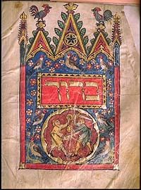

|  | The Standard Prayer Booktr. by Simeon Singer[1915] |
This is a Jewish prayer book, or Siddur, containing prayers, meditations, and texts used during life passage ceremonies including circumcision, marriage and funerals, with variants for Jewish holy days. It includes texts such as the Ten Commandments, the Maimonidean 13 Principles of Faith, and the Pirqe Aboth (Ethics of the Fathers). This Siddur, The Standard Prayer Book, appears to have been widely used in the early 20th century. This is the first freely available, open-source online Siddur posted on the Internet.--J.B. Hare, January 10th, 2010.
Title Page
Publishers' Foreword
Table of Contents
Morning Prayer For Young Children
Prayer on Entering The Synagogue
Morning Service
Mourner's Kaddish
Psalms for the Days of the Week
Kaddish d’Rabbonon
Prayer For Sustenance
The Ten Commandments
Thirteen Principles of the Faith
Afternoon Service for Weekdays
Evening Service for Weekdays and the Termination of the Sabbath
Inauguration of the Sabbath
Evening Service for Sabbaths and Festivals
Kiddush for Sabbath Evening
Morning Service for Sabbaths and Festivals
Order of Reading the Law on Sabbaths and Festivals
Additional Service for Sabbaths
Hymn of Glory
Kiddush for Sabbath Morning
Afternoon Service for Sabbaths
Ethics of the Fathers
Service for the Conclusion of the Sabbath
Meditation and Blessings on Taking the Lulab
Hallel
Additional Service for the New Moon
Service for Festivals
Kiddush for Festivals
Meditation in the Tabernacle
Additional Service for the Festivals
Service for New Year
Kiddush for New Year
Additional Service for New Year
Service for the Eve of the Day of Atonement
Service for the Day of Atonement
Additional Service for the Day of Atonement
Afternoon Service for the Day of Atonement
Conclusion Service for the Day of Atonement
Order of Counting the Omer
Service for Chanukah
Service for Purim
Grace Before and After Meals
Blessings on Various Occasions
Prayers Before Retiring to Rest at Night
Marriage Service
Grace After the Wedding Feast
Service at the Consecration of a House
Service at a Circumcision
Grace after the Meal Following A Circumcision
Service for the Redemption of the First-Born
Prayer to be Said by a Sick Person
Confession on a Death-Bed
The Burial Service
Prayer in the House of Mourning
Service at the Setting of a Tombstone
Memorial Service for the Dead
Night Prayer for Young Children
The Mourner's Kaddish